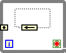

You have not wired a valid type to a Feedback Node on the block diagram. LabVIEW cannot determine what type of data to store in the Feedback Node. To indicate this error, LabVIEW displays the Feedback Node with a black border.
To correct this error, wire a valid data type to the input terminals of the Feedback Node. When LabVIEW knows which data type to use, it displays the Feedback Node with the color of that data type.